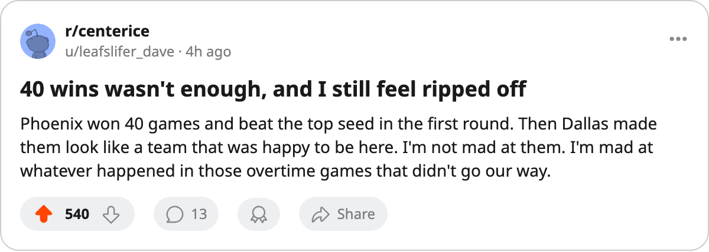

Numbers Game: Mike Johnson finished with 12 points in 13, and the 8th seed won 7 before it lost 6
Phoenix beat the 1st seed in 7 and pushed Dallas to 6; the Coyotes' 40-win season ends with the 8th playoff point total in the West
 Ray CallumSenior correspondent · Home Ice Network
Ray CallumSenior correspondent · Home Ice Network Mike Johnson81 posted 9 goals and 3 assists for 12 points in 13 playoff games for the
Mike Johnson81 posted 9 goals and 3 assists for 12 points in 13 playoff games for the  Phoenix Coyotes Coyotes. At overall 69, that is the highest scoring rate of any player graded below 70 who reached double digits this spring. He finished with 4 game-winning goals, including the one that ended
Phoenix Coyotes Coyotes. At overall 69, that is the highest scoring rate of any player graded below 70 who reached double digits this spring. He finished with 4 game-winning goals, including the one that ended  Colorado Avalanche's season in Game 7 on 2005-04-20.
Colorado Avalanche's season in Game 7 on 2005-04-20.
 Dallas Stars ended everything else on 2005-05-02, a 4-1 Game 6 that closed the series 4-2 and left Phoenix with 7 wins across 13 games. The Coyotes won 7 games in 13 with a 93-point regular season that put them 8th in the Western Conference table.
Dallas Stars ended everything else on 2005-05-02, a 4-1 Game 6 that closed the series 4-2 and left Phoenix with 7 wins across 13 games. The Coyotes won 7 games in 13 with a 93-point regular season that put them 8th in the Western Conference table.
The season in numbers
Phoenix won 40 games in the regular season with only 2 overtime wins, the lowest OTW total in the conference. A 40-win team with 2 OTW and 9 OTL finished 93 points, 19 behind the 1-seed Colorado Avalanche. The Coyotes outscored their conference rivals 31-24 against Dallas and 24-31 on the season against the Stars overall, including 6 one-goal games in 11 meetings.
The second-round exit follows a first round where the Coyotes trailed Colorado Avalanche 3-2 before winning Games 6 and 7. That was 3 one-goal games in the set.
Supporting cast
 Mike Sillinger83 carried 4 goals and 7 assists for 11 points in 13.
Mike Sillinger83 carried 4 goals and 7 assists for 11 points in 13.  Shane Doan81 had 6 and 4 for 10.
Shane Doan81 had 6 and 4 for 10.  Steve Konowalchuk80 chipped in 1 goal and 9 assists for 10 points, the highest assist total on the club.
Steve Konowalchuk80 chipped in 1 goal and 9 assists for 10 points, the highest assist total on the club.  Sean Burke86 started 63 of 82 regular-season games at 77% share and finished the spring 5-6 with a 2.60 GAA. Brian Boucher79 went 1-1 in 2 starts.
Sean Burke86 started 63 of 82 regular-season games at 77% share and finished the spring 5-6 with a 2.60 GAA. Brian Boucher79 went 1-1 in 2 starts.
What Johnson told The Tunnel after elimination holds up: Phoenix needed its goaltender to win a game in a seven-game series, and Burke went 5-6 across two series. That's a depth problem at the position, not a Burke problem.
The Coyotes' 40 wins this season sit ahead of 6 Western clubs in points, but the 9 OTL and 2 OTW cost them 7 points against Colorado Avalanche and Dallas Stars combined across 13 meetings.
